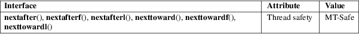

nextafter, nextafterf, nextafterl, nexttoward, nexttowardf, nexttowardl − floating-point number manipulation
Math library (libm, −lm)
#include <math.h>
double
nextafter(double x, double y);
float nextafterf(float x, float
y);
long double nextafterl(long double x, long
double y);
double
nexttoward(double x, long double
y);
float nexttowardf(float x, long double
y);
long double nexttowardl(long double x, long
double y);
Feature Test Macro Requirements for glibc (see feature_test_macros(7)):
nextafter():
_ISOC99_SOURCE || _POSIX_C_SOURCE >= 200112L
|| _XOPEN_SOURCE >= 500
|| /* Since glibc 2.19: */ _DEFAULT_SOURCE
|| /* glibc <= 2.19: */ _BSD_SOURCE || _SVID_SOURCE
nextafterf(),
nextafterl():
_ISOC99_SOURCE || _POSIX_C_SOURCE >= 200112L
|| /* Since glibc 2.19: */ _DEFAULT_SOURCE
|| /* glibc <= 2.19: */ _BSD_SOURCE || _SVID_SOURCE
nexttoward(),
nexttowardf(), nexttowardl():
_XOPEN_SOURCE >= 600 || _ISOC99_SOURCE
|| _POSIX_C_SOURCE >= 200112L
The nextafter(), nextafterf(), and nextafterl() functions return the next representable floating-point value following x in the direction of y. If y is less than x, these functions will return the largest representable number less than x.
If x equals y, the functions return y.
The nexttoward(), nexttowardf(), and nexttowardl() functions do the same as the corresponding nextafter() functions, except that they have a long double second argument.
On success, these functions return the next representable floating-point value after x in the direction of y.
If x equals y, then y (cast to the same type as x) is returned.
If x or y is a NaN, a NaN is returned.
If x is finite, and the result would overflow, a range error occurs, and the functions return HUGE_VAL, HUGE_VALF, or HUGE_VALL, respectively, with the correct mathematical sign.
If x is not equal to y, and the correct function result would be subnormal, zero, or underflow, a range error occurs, and either the correct value (if it can be represented), or 0.0, is returned.
See math_error(7) for information on how to determine whether an error has occurred when calling these functions.
The following
errors can occur:
Range error: result overflow
errno is set to ERANGE. An overflow floating-point exception (FE_OVERFLOW) is raised.
Range error: result is subnormal or underflows
errno is set to ERANGE. An underflow floating-point exception (FE_UNDERFLOW) is raised.
For an explanation of the terms used in this section, see attributes(7).

C11, POSIX.1-2008.
This function is defined in IEC 559 (and the appendix with recommended functions in IEEE 754/IEEE 854).
C99, POSIX.1-2001.
In glibc 2.5 and earlier, these functions do not raise an underflow floating-point (FE_UNDERFLOW) exception when an underflow occurs.
Before glibc 2.23 these functions did not set errno.
nearbyint(3)